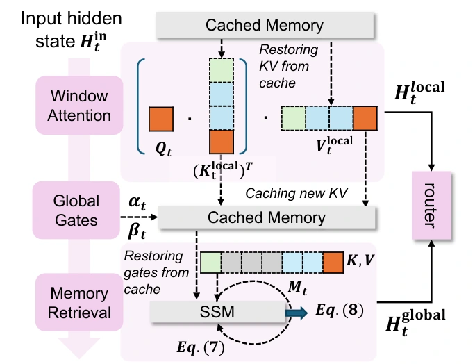

Overview
VideoSSM augments autoregressive diffusion with a hybrid memory: a sliding-window cache for local detail and an evolving state for longer-range context. It supports minute-long generation and prompt switching without retaining an ever-growing history of keys and values.
Method
Remember the past. Keep the scene moving.
01
Local cache
Recent tokens retain fine motion and appearance.
02
Global state
Evicted tokens update a compact recurrent memory.
03
Adaptive fusion
A router combines local and global information.


Results
Consistency without freezing the video.
| Metric | Self Forcing | LongLive | VideoSSM |
|---|---|---|---|
| Subject consistency | 88.25 | 91.09 | 92.51 |
| Background consistency | 91.73 | 93.23 | 93.95 |
| Dynamic degree | 35.00 | 37.50 | 50.50 |
Selected metrics from Table 2, evaluated on 60-second videos. Higher is better. See the paper for the complete comparison and evaluation protocol.
Read the experimental protocol ↗BibTeX
@misc{yu2025videossm,
title = {VideoSSM: Autoregressive Long Video Generation with Hybrid State-Space Memory},
author = {Yifei Yu and Xiaoshan Wu and Xinting Hu and Tao Hu and Yangtian Sun and Xiaoyang Lyu and Bo Wang and Lin Ma and Yuewen Ma and Zhongrui Wang and Xiaojuan Qi},
year = {2025},
eprint = {2512.04519},
archivePrefix = {arXiv},
primaryClass = {cs.CV},
url = {https://arxiv.org/abs/2512.04519}
}